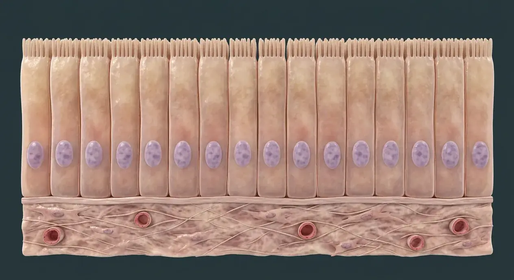

Epithelial
Simple columnar example
Despite the dazzling variety of human organs, every structure in the body is constructed from combinations of just four foundational tissue families. In this illustrated guide to four basic tissue types anatomy, we examine 28 documented structures—including human cell, plasma membrane, cytoplasm and cytosol, nucleus—linking regional topography, tissue architecture, physiological mechanisms, and clinical reasoning.

Simple versus stratified epitheliumApical surface and cell polarityEpithelial tissueFour fundamental tissue categoriesHistology versus digital cutawayBasal lamina (basement-membrane zone)Despite the dazzling variety of human organs, every structure in the body is constructed from combinations of just four foundational tissue families. Cells organize into tissues, and organs contain combinations of epithelial, connective, muscular and nervous tissues. The main image illustrates a single layer of columnar epithelium above connective tissue; epithelium itself has no capillaries. Separate tissue-scale digital cutaways illustrate loose areolar connective tissue, skeletal muscle and a multipolar neuron. Cell organelles and some specialized tissue subtypes are described in text rather than falsely pinned on these images. These are computer-generated educational models, not histology slides, quantified microscopy or diagnostic samples. Within the human body, the cells & four basic tissues (Cellulae et textus fundamentales) is situated in cell-to-tissue scale across organs; epithelial example shown on main plate.
The human cell is a cell is a membrane-bound living unit with internal components that perform metabolism and communication. Physiologically, the human cell governs combines organelles to maintain tissue function. Structurally, the plasma membrane comprises lipid bilayer with embedded proteins separates cell interior from extracellular fluid. Physiologically, the plasma membrane regulates exchange, signaling and cellular identity. Structurally, the cytoplasm and cytosol comprises cytoplasm includes cytosol and organelles outside the nucleus; cytosol is the fluid component. Physiologically, the cytoplasm and cytosol governs hosts much of cellular metabolism. Structurally, the nucleus comprises membrane-enclosed compartment holding most nuclear DNA in many human cell types. Physiologically, the nucleus coordinates gene expression and cell division. The human cell is a cell is a membrane-bound living unit with internal components that perform metabolism and communication. Physiologically, the human cell governs combines organelles to maintain tissue function. Structurally, the plasma membrane comprises lipid bilayer with embedded proteins separates cell interior from extracellular fluid. Physiologically, the plasma membrane regulates exchange, signaling and cellular identity.
Clinically, regarding the epithelial tissue, this is a digital teaching cutaway, not a patient histology slide or a picture of every epithelium. From a diagnostic standpoint, in the basal lamina (basement-membrane zone), basement membrane in tissue sections often includes more than the basal lamina alone. In clinical pathology involving the human cell, a cutaway is a stylized model, not a universal cell portrait. Medical evaluation of the plasma membrane also notes that its molecular bilayer cannot be directly resolved on a gross organ plate.
Connected study pathways in this atlas: Anatomical language · planes & movement, Body cavities · regions & quadrants, Skin layers & appendages.
Digital microscopic-scale teaching cutaways, not real histology slides. Each plate shows a particular example, not every subtype.
Simple columnar example
Loose areolar example
Skeletal muscle example
Multipolar neuron model
These 28 structures describe anatomy related to the chapter’s regional illustration. Each entry separates location, function and a clinical point.
Fundamental living structural and functional unit of the human body, bounded by a selectively permeable plasma membrane and containing a nucleus (in most mature cell types), cytosol, cytoskeleton, and membrane-bound organelles.
What it doesExecutes cellular metabolism, protein synthesis, energy transduction, excitability, and mitotic or meiotic division to sustain all tissues and organs.
Clinical connectionOver 200 specialized cell phenotypes—ranging from 7.5-micrometer biconcave erythrocytes to meter-long motor neurons—arise from a single fertilized zygote through differential gene expression.
Fluid-mosaic amphipathic phospholipid bilayer (~7.5–10 nm thick) stabilized by cholesterol and studded with integral ion channels, carrier proteins, G-protein-coupled receptors, and an external carbohydrate glycocalyx.
What it doesMaintains electrochemical gradients (such as the Na+/K+-ATPase resting potential), mediates selective transport and endocytosis/exocytosis, and transduces extracellular hormone and neurotransmitter signals.
Clinical connectionMutations in plasma-membrane transport proteins cause major clinical channelopathies—for example, defective CFTR chloride channels in cystic fibrosis impair epithelial mucus hydration in the lungs and pancreas.
All intracellular contents located between the plasma membrane and the nuclear envelope: the cytosol is the aqueous, gel-like intracellular fluid rich in enzymes, ions, and metabolites, while the cytoplasm encompasses both the cytosol and suspended organelles plus cytoskeletal filaments.
What it doesServes as the biochemical reaction medium for glycolysis, signal transduction cascades, ribosomal translation, and vesicular trafficking along microtubule and actin tracks.
Clinical connectionHigh intracellular potassium (~140 mEq/L) and low free intracellular calcium (~100 nM) within the cytosol are tightly regulated; cytosolic enzyme release into plasma (such as ALT from hepatocytes or troponin from cardiomyocytes) is a key diagnostic marker of cell necrosis.
Largest membrane-bound organelle in eukaryotic cells, enclosed by a double-membrane nuclear envelope perforated by nuclear pore complexes, housing chromosomal DNA wound around histone octamers (chromatin) and a dense nucleolus where ribosomal RNA is transcribed.
What it doesStores the diploid human genome (46 chromosomes), regulates transcriptional gene expression, and coordinates DNA replication prior to mitosis.
Clinical connectionWhile most cells have a single nucleus, mature mammalian erythrocytes extrude their nuclei to maximize hemoglobin space, whereas skeletal myofibers and osteoclasts are multinucleated syncytia.
Double-membrane organelles featuring a smooth outer membrane and a deeply folded inner membrane (cristae) enclosing the mitochondrial matrix; uniquely possess their own circular maternal DNA (mtDNA) and 70S-like ribosomes.
What it doesGenerate the vast majority of cellular adenosine triphosphate (ATP) via the tricarboxylic acid (TCA) cycle, beta-oxidation of fatty acids, and the electron transport chain (oxidative phosphorylation), while also regulating intrinsic apoptosis via cytochrome c.
Clinical connectionHigh-energy tissues—cardiomyocytes, renal proximal tubule cells, neurons, and oxidative skeletal myofibers—are densely packed with mitochondria and are the first to fail in hypoxia, cyanide poisoning, or maternally inherited mitochondrial myopathies.
Ribonucleoprotein complexes (80S in eukaryotic cytoplasm, composed of 60S and 40S subunits) that exist either free in the cytosol or docked onto the cytosolic face of flattened interconnected membrane cisternae forming the rough endoplasmic reticulum (RER).
What it doesFree ribosomes synthesize cytosolic, nuclear, and mitochondrial proteins, whereas RER-bound ribosomes co-translationally translocate secretory proteins, lysosomal enzymes, and integral membrane proteins into the ER lumen for folding and N-linked glycosylation.
Clinical connectionCells specialized for heavy protein secretion—such as antibody-secreting plasma cells, pancreatic acinar cells, and Nissl-rich motor neurons—exhibit abundant basophilic rough endoplasmic reticulum.
Polarized stack of flattened, membrane-bound cisternae organized from a cis-receiving face (adjacent to the rough ER) through medial compartments to a trans-Golgi network (TGN) that buds off clathrin- and coat-protein-vesicles.
What it doesPerforms post-translational O-linked glycosylation, sulfation, proteolytic cleavage, and mannose-6-phosphate tagging to sort proteins toward constitutive secretion, regulated secretory granules, the plasma membrane, or lysosomes.
Clinical connectionDefective phosphorylation of mannose residues in the cis-Golgi prevents lysosomal enzyme targeting, causing inclusion-cell (I-cell) disease, a severe lysosomal storage disorder.
Complex non-cellular macromolecular scaffold secreted by resident cells, composed of hydrated ground substance (glycosaminoglycans such as hyaluronan, proteoglycans, and multiadhesive glycoproteins like fibronectin and laminin) reinforced by collagen, reticular, and elastic fibers.
What it doesProvides compressive resilience, tensile strength, biochemical growth-factor reservoirs, and mechanical anchoring cues (mechanotransduction via integrins) that govern cell migration and tissue repair.
Clinical connectionPathological excess of extracellular matrix deposition driven by TGF-beta leads to organ fibrosis (hepatic cirrhosis, pulmonary fibrosis), whereas enzymatic matrix degradation by matrix metalloproteinases (MMPs) facilitates tumor invasion.
Avacular, densely packed cellular sheets united by junctional complexes (tight junctions, adherens junctions, desmosomes, and gap junctions) that cover external body surfaces, line internal luminal cavities and vessels, and invaginate to form exocrine and endocrine glands.
What it doesForms selective physical and chemical barriers, performs transcellular absorption and ion secretion, and provides mucociliary or sensory surface specializations.
Clinical connectionBecause epithelial cells undergo continuous mitotic turnover and are directly exposed to environmental mutagens, over 80–90% of adult human malignancies arise from epithelial tissue (carcinomas and adenocarcinomas).
Strict structural and functional asymmetry of epithelial cells in which the apical domain faces the external environment or internal lumen—often bearing actin-cored microvilli (brush border), stereocilia, or motile 9+2 axonemal cilia—while the basolateral domain contacts adjacent cells and the basal lamina.
What it doesSegregates distinct ion transporters, enzymes, and receptors between apical and basolateral membranes to drive unidirectional transepithelial absorption (e.g., glucose and sodium in the gut and nephron) and secretion.
Clinical connectionTight junctions (zonula occludens) composed of claudin and occludin proteins seal the subapical perimeter, preventing paracellular back-leak and maintaining strict membrane polarity.
Specialized acellular sheet (~40–120 nm thick) at the base of all epithelia, composed of a self-assembling meshwork of Type IV collagen, laminin, nidogen (entactin), and heparan sulfate proteoglycans (perlecan), anchored to underlying Type III reticular fibers to form the light-microscopic basement membrane.
What it doesMechanically tethers avascular epithelium to the underlying connective tissue via hemidesmosomes, filters macromolecules (as in the glomerular filtration barrier), and guides epithelial regeneration after injury.
Clinical connectionIn oncological pathology, the basement membrane is the definitive boundary between pre-invasive carcinoma in situ and invasive carcinoma capable of accessing stromal lymphatics and blood vessels.
Morphological classification based on cell layer count and cell shape (squamous, cuboidal, columnar): simple epithelia consist of a single cell layer where every cell contacts the basal lamina and reaches the lumen, whereas stratified epithelia stack two or more layers above the basal germinative layer.
What it doesSimple epithelia minimize diffusion distance for gas exchange (alveoli), filtration (Bowman capsule), and absorption (intestine), whereas stratified squamous epithelia (epidermis, esophagus, vagina) withstand severe mechanical abrasion.
Clinical connectionChronic irritation can induce adaptive epithelial metaplasia—such as Barrett esophagus, where acid reflux converts stratified squamous epithelium into simple columnar epithelium with goblet cells, or smoking-induced squamous metaplasia of respiratory pseudostratified ciliated epithelium.
Most abundant and widely distributed tissue family, derived from embryonic mesenchyme and characterized by relatively sparse cells embedded within an abundant extracellular matrix; encompasses connective tissue proper (loose areolar, dense regular/irregular, adipose, reticular), cartilage, bone, and blood.
What it doesForms the structural framework of every organ, binds epithelia to muscle, stores energy and minerals, transports blood-borne gases and immune cells, and orchestrates wound healing.
Clinical connectionGenetic defects in connective-tissue matrix proteins produce systemic disorders such as Marfan syndrome (fibrillin-1 elastic microfibril mutation risking aortic root aneurysm) and Ehlers-Danlos syndromes (collagen synthesis/processing defects).
Principal resident spindle-shaped mesenchymal cell of connective tissue proper, possessing an euchromatic oval nucleus, branched cytoplasmic processes, and abundant rough endoplasmic reticulum and Golgi membranes when actively synthesizing matrix (quiescent mature cells are termed fibrocytes).
What it doesSynthesizes and secretes procollagen, tropoelastin, reticular fibers, glycosaminoglycans, and proteoglycans to build and continually remodel the extracellular stroma.
Clinical connectionFollowing tissue laceration or infarction, local fibroblasts proliferate and differentiate into alpha-smooth-muscle-actin-expressing myofibroblasts that contract wound margins and deposit dense collagenous scar tissue.
Inelastic, high-tensile-strength extracellular protein bundles assembled from triple-helical tropocollagen molecules (rich in glycine, proline, and hydroxyproline) that display a characteristic 67-nm cross-banding periodicity under electron microscopy.
What it doesImparts immense resistance to pulling and tearing forces: Type I collagen dominates bone, dermis, tendons, and ligaments; Type II forms hyaline cartilage; Type III forms delicate reticular networks in liver, spleen, and lymph nodes; Type IV forms basal laminae.
Clinical connectionPost-translational hydroxylation of proline and lysine residues requires Vitamin C (ascorbic acid) as a cofactor; Vitamin C deficiency causes scurvy, marked by fragile capillaries, bleeding gums, and poor wound healing.
Thin-walled microvessel (5–10 micrometers in diameter) lined by a single layer of simple squamous endothelial cells and sparse pericytes within the loose areolar lamina propria immediately beneath the epithelial basement membrane.
What it doesDelivers oxygen, glucose, amino acids, and leukocytes to the subepithelial stroma so nutrients can diffuse across the basal lamina into the completely avascular overlying epithelium.
Clinical connectionDuring acute inflammation, histamine and bradykinin cause post-capillary venular endothelial cells in the loose connective tissue to contract, increasing microvascular permeability and producing localized tissue edema.
Excitable, contractile mesodermal tissue composed of elongated cells (myofibers or myocytes) packed with actin thin filaments and myosin II thick filaments that slide past one another via ATP-dependent cross-bridge cycling triggered by cytosolic calcium influx.
What it doesGenerates mechanical force for voluntary locomotion and posture (skeletal muscle), rhythmic circulatory pumping (cardiac muscle), and involuntary visceral peristalsis and vascular tone (smooth muscle).
Clinical connectionBecause skeletal and cardiac muscle account for roughly 40–50% of total body mass, muscle tissue is also the body’s primary metabolic sink for insulin-mediated glucose uptake and thermogenesis.
Long, cylindrical, unbranched multinucleated syncytial cell (10–100 micrometers in diameter and up to several centimeters long) formed by the embryonic fusion of myoblasts, exhibiting prominent transverse A- and I-band striations and flattened nuclei pushed to the periphery beneath the sarcolemma.
What it doesContracts rapidly and forcefully under voluntary somatic motor control from alpha motor neurons at the neuromuscular junction (motor end plate) via nicotinic acetylcholine receptors and T-tubule/sarcoplasmic-reticulum excitation-contraction coupling.
Clinical connectionIn Duchenne muscular dystrophy, absence of the subsarcolemmal linker protein dystrophin causes mechanical tearing of the sarcolemma during contraction, leading to progressive myofiber necrosis and fibrofatty replacement.
Delicate sheath of reticular fibers (Type III collagen), basal lamina, and tortuous continuous capillaries that wraps each individual skeletal muscle fiber within a fascicle, continuous externally with the perimysium and epimysium.
What it doesElectrically insulates individual myofibers, houses satellite stem cells for muscle regeneration, and transmits lateral contractile tension through the perimysium and epimysium to the tendon and bone periosteum.
Clinical connectionSatellite cells residing between the sarcolemma and the endomysial basal lamina proliferate after exercise-induced microtrauma to repair and hypertrophy damaged skeletal myofibers.
Branched, cross-striated cardiomyocytes containing one (occasionally two) centrally located oval nuclei, abundant large mitochondria (~35–40% of cell volume), and specialized step-like intercellular junctions called intercalated discs.
What it doesIntercalated discs combine fascia adherens and desmosomes (for mechanical tension transfer) with large gap junctions (connexin-43) that allow action potentials to spread rapidly from cell to cell, enabling the myocardium to contract as a functional electrical syncytium.
Clinical connectionAdult cardiomyocytes have negligible regenerative capacity; ischemic necrosis from coronary artery occlusion (myocardial infarction) replaces functional cardiac muscle with non-contractile collagenous scar tissue.
Fusiform (spindle-shaped), non-striated contractile cells containing a single central corkscrew-like nucleus, dense bodies (analogous to Z-discs) anchored to intermediate filaments, and caveolae in place of T-tubules.
What it doesProduces slow, sustained, energy-efficient involuntary contractions regulated by the autonomic nervous system, hormones, and local stretch via calcium-calmodulin activation of myosin light-chain kinase (MLCK).
Clinical connectionForms the tunica media of blood vessels (regulating systemic blood pressure and peripheral vascular resistance) and the muscularis externa of the gastrointestinal, urinary, respiratory, and reproductive tracts.
Ectodermally derived communication network (originating from the embryonic neural tube and neural crest) composed of electrically excitable neurons and a tenfold-larger population of non-excitable supporting neuroglial cells, organized into the central nervous system (brain and spinal cord) and peripheral nervous system.
What it doesTransduces internal and external sensory stimuli, integrates information across billions of chemical and electrical synapses, and issues rapid motor and neuroendocrine commands.
Clinical connectionAlthough comprising only ~2% of body weight, central nervous tissue consumes ~20% of total body oxygen and glucose continuously and suffers irreversible ischemic injury within 4–6 minutes of circulatory arrest.
The neuronal soma (perikaryon) contains a large euchromatic nucleus with a prominent nucleolus and abundant rough ER (Nissl substance), giving rise to multiple tapering, branched dendritic trees studded with dendritic spines that receive excitatory and inhibitory synaptic inputs.
What it doesSummates graded postsynaptic potentials (EPSPs and IPSPs) across its dendritic arbor and soma, initiating an all-or-none action potential at the voltage-gated sodium-channel-rich axon hillock (initial segment) when threshold is reached.
Clinical connectionBecause mature neurons are post-mitotic (G0 phase), neurodegenerative disorders that destroy neuronal somata—such as dopaminergic loss in the substantia nigra in Parkinson disease or motor neuron loss in ALS—produce permanent neurological deficits.
Single, uniform-diameter cylindrical cytoplasmic process arising from the axon hillock and extending up to a meter to terminate at presynaptic boutons (axon terminals) containing neurotransmitter synaptic vesicles; lacks rough ER and relies on kinesin-mediated anterograde and dynein-mediated retrograde axonal transport along microtubules.
What it doesPropagates regenerative action potentials away from the cell body toward target neurons, skeletal myofibers, or glandular cells to trigger calcium-dependent exocytosis of neurotransmitters across the synaptic cleft.
Clinical connectionTransection of a peripheral axon triggers Wallerian degeneration of the distal stump; in the peripheral nervous system, intact Schwann-cell basalamina tubes guide axonal regeneration at ~1–3 mm per day, whereas CNS axons fail to regenerate due to glial scar and myelin inhibitory proteins.
Multilayered, lipid-rich concentric membrane wrapping (~75–80% lipid, 20–25% protein) around axons formed by oligodendrocytes in the central nervous system (each myelinating multiple axons) and by Schwann cells in the peripheral nervous system (each myelinating a single internode), interrupted every 1–2 mm by bare axonal gaps called nodes of Ranvier.
What it doesElectrically insulates the internodal axolemma (increasing membrane resistance and decreasing capacitance) so action potentials leap rapidly from node to node (saltatory conduction) at speeds up to 70–120 m/s while conserving metabolic ATP.
Clinical connectionAutoimmune demyelination of CNS oligodendrocytes causes multiple sclerosis (presenting with optic neuritis, internuclear ophthalmoplegia, and motor/sensory plaques), whereas autoimmune demyelination of PNS Schwann cells causes Guillain-Barré syndrome (acute ascending paralysis).
Specialized non-neuronal cells of the nervous system: in the CNS, astrocytes (maintain the blood-brain barrier and potassium/glutamate homeostasis), oligodendrocytes (myelinate CNS axons), microglia (resident yolk-sac-derived phagocytic macrophages), and ependymal cells (line ventricles and secrete/circulate CSF); in the PNS, Schwann cells and ganglionic satellite cells.
What it doesProvide structural scaffolding, metabolic lactate shuttle support, neurotransmitter reuptake, electrical insulation, and immune surveillance for neurons.
Clinical connectionUnlike post-mitotic neurons, glial cells retain the ability to divide; consequently, the vast majority of primary adult brain tumors (gliomas, including astrocytomas, glioblastomas, and oligodendrogliomas) originate from glial precursors.
Every human organ is assembled from four primary histogenesis families: epithelial tissue (covering/lining and glandular parenchyma), connective tissue (structural stroma, bone, cartilage, and blood), muscle tissue (contractile force generation), and nervous tissue (electrical signaling and control).
What it doesIntegrates barrier transport, mechanical strength, motility, and neural regulation into composite organ walls—such as the small intestine, which layers mucosal epithelium, lamina propria/submucosal connective tissue, muscularis externa smooth muscle, and enteric nervous plexuses.
Clinical connectionUnderstanding how the four tissue types interact in any organ allows students and clinicians to predict both normal physiological function and the specific histopathological patterns of inflammation, repair, and neoplasia.
Microscopic anatomy (histology) studies thin (3–8 micrometer) tissue sections fixed in formalin, embedded in paraffin, and stained with dyes such as hematoxylin (basic dye staining acidic DNA/RNA blue-purple) and eosin (acidic dye staining basic cytoplasmic proteins and collagen pink), complemented by three-dimensional micro-anatomical reconstructions.
What it doesLinks two-dimensional stained light and electron micrographs with three-dimensional cellular polarity, basal lamina architecture, and microvascular relationships.
Clinical connectionCorrelating three-dimensional micro-anatomical models with routine H&E biopsy sections, immunohistochemistry, and ultrastructural electron microscopy forms the cornerstone of diagnostic surgical pathology.
Short answers grounded in the structures described above. Use the illustrated guide for anatomical context.
The broad categories are epithelial, connective, muscle and nervous tissue. Most organs contain multiple types; the images show specific teaching examples, not all subtypes. Physiologically, the four fundamental tissue categories provides a framework for reading tissue architecture. Clinically, regarding the four fundamental tissue categories, an organ usually contains more than one tissue type.
Epithelia form close-packed sheets with apical and basal surfaces and little extracellular space. Connective-tissue cells are often dispersed in extracellular matrix. Epithelium is generally avascular and nourished from underlying tissues. The epithelial tissue close-packed cell sheets cover body surfaces, line passages and form much glandular tissue; the image depicts one simple columnar example. Physiologically, the epithelial tissue provides selective barrier, absorption, transport and secretion.
No. They are digitally generated microscopic-scale educational cutaways rather than histology specimens, patient images, measured magnifications or diagnostic evidence. Structurally, the histology versus digital cutaway comprises histology examines prepared tissue sections with microscopy; these four generated images are stylized educational cutaways. Physiologically, the histology versus digital cutaway governs distinguishes tissue concepts from diagnostic specimens.
The striated, multinucleated parallel fibers depict a skeletal-muscle example. Smooth muscle is not striated, and cardiac muscle differs in branching and intercalated discs; neither has a dedicated picture in this batch. Structurally, the muscle tissue comprises excitable cells shorten and produce force; skeletal, cardiac and smooth muscle are three distinct types. Physiologically, the muscle tissue supports movement, circulation and organ wall function.
Nervous tissue contains signaling neurons and supporting glial cells. The example shows a multipolar neuron with dendrites, an axon and myelin on some axon segments, not a map of a named clinical nerve. Physiologically, the nervous tissue detects, processes and transmits information.
Follow these connected structures and body systems in the illustrated atlas.
 Anatomical language · planes & movementThe universal coordinate system of medicine: standard anatomical position, sagittal, coronal, and transverse planes, directional pairs, and joint movements.↗
Anatomical language · planes & movementThe universal coordinate system of medicine: standard anatomical position, sagittal, coronal, and transverse planes, directional pairs, and joint movements.↗ Body cavities · regions & quadrantsMapping dorsal and ventral body cavities, double-layered serous membranes, and patient-oriented four abdominal quadrants and nine clinical surface regions.↗
Body cavities · regions & quadrantsMapping dorsal and ventral body cavities, double-layered serous membranes, and patient-oriented four abdominal quadrants and nine clinical surface regions.↗ Skin layers & appendagesFive epidermal keratinocyte strata, interlocking dermal papillae, reticular collagen bundles, eccrine and sebaceous glands, and specialized touch corpuscles.↗
Skin layers & appendagesFive epidermal keratinocyte strata, interlocking dermal papillae, reticular collagen bundles, eccrine and sebaceous glands, and specialized touch corpuscles.↗ Small intestine · wall & enteric plexusesFour gastrointestinal wall tunics, absorptive villi with central lacteals, stem-cell crypts of Lieberkühn, and the submucosal and myenteric enteric nerve plexuses.↗
Small intestine · wall & enteric plexusesFour gastrointestinal wall tunics, absorptive villi with central lacteals, stem-cell crypts of Lieberkühn, and the submucosal and myenteric enteric nerve plexuses.↗General anatomy references and related source chapters for continued study. These links do not make the digital illustrations clinical images or certify every anatomical variant.
This educational page is not medical advice and has not undergone formal clinical peer review. Spotted an error? Contact the editor.
Open the realistic interactive plate, label lines, focus view and self-test.